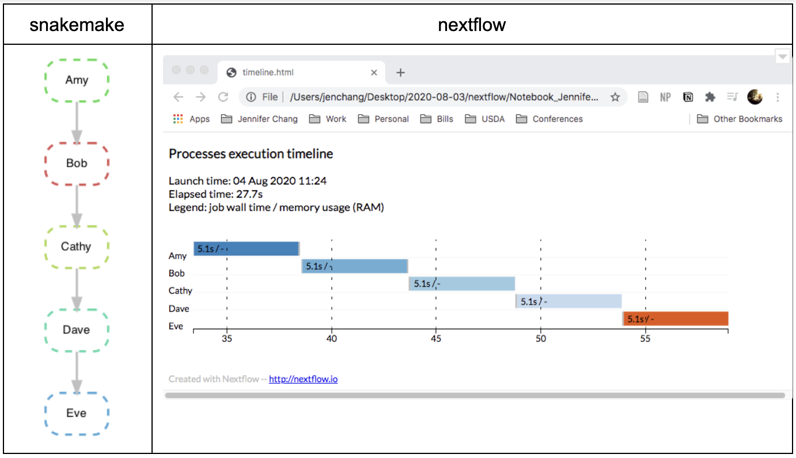

Passing the baton in workflow languages: makefiles, snakemake, and nextflow
I was curious about the differences between workflow languages since they are becoming more and more popular for submitting pipelines across different architectures (local machine, HPC, AWS), with caching and some features for parallelism. This is a write up of a quick comparison using a toy example running on a local machine, mostly to compare syntax.
For now, I'm comparing Makefiles, Snakemake, and Nextflow. I picked Makefiles since most workflow languages derive from it, Snakemake for being popular in the python community, and Nextflow because of the buzz on twitter and recent academic papers. There are definitely more workflow languages than these (CWL, drake, cromwell, etc…).
I started with an example pipeline, passing intermediate textfiles. The side-by-side comparison of source code is shown below:

From left to right, we have the 1970's Makefile, the ~2012 Snakemake, and the ~2017 Nextflow. (Actually the Nextflow is from the later version (dsl2) which includes some substantial changes in syntax.) Across the 3 languages are rules/processes/code chunks which are named a variation of "Amy", "Bob", "Cathy", "Dave", and "Eve". Each one passes a text file ("...baton.txt") down the line, similar to a relay race passing a baton between runners. Each runner (rule/process/code chunk) includes a sleep statement, waiting for 5 seconds before adding a progress statement (e.g. "Dave passes baton") to the baton text file. The sleep statement simulates some pipeline command or analysis step.
Comparing Syntax:
Of the three languages, Makefile and Snakemake look the most similar IMHO. Makefiles define their rules
output_file : required_input_files
# shell commands here
Snakemake adds an explicit "rule" prefix and moves the input/output files down to their own "input:", "output:" prefix. Even the shell command gets its own "shell:" prefix. Snakemake rules can have arbitrary names "Amy", "Bob" instead of the output files "Amy_baton.txt", "Bob_baton.txt", etc.
Moving from Snakemake to Nextflow, we see rules are now grouped into curly brackets and each defined as a "process". Nextflow still has Snakemake's arbitrary rule names ("Amy", "Bob") and "input:"/"output:" prefixes; but the "shell:" prefix has changed to "script:". Nextflow's "script:" chunk can be from any scripting language (bash, perl, R, python…) selected by a shebang "# /usr/bin/env bash" line. Nextflow dsl2 has the added "workflow{...}" chunk, where output of a process is piped (bash-style) as input to another process (e.g. "Amy | Bob | Cathy |Dave | Eve ") with a view command at the end, to print out the final baton. This allows flexibility in the pipeline as processes could be rearranged (e.g. "Amy | Dave | Cathy | Bob | Eve") instead of being hard coded in Makefiles or Snakemake. It's possible Snakemake has methods similar to Nextflow's "workflow:" but I will need to explore more. I admit I'm more familiar with Nextflow's syntax.
Comparing the run experience:
Running the commands are shown below:

Running the Makefiles made me feel like I was running a bash script, familiar and a bit generic. Snakemake output was a bit longer than I expected... and I admit I prefer Nextflow's listing of each process and the number of parallel threads dedicated to each process. Snakemake and Nextflow both had reporting methods for showing the connection between processes and how long each process took to run. I did not see a similar feature in Makefiles.

Next Steps:
I still need to explore how they compare in a pipeline with parallelism. I regularly use Nextflow for parallelizing my pipelines on slurm managed HPC servers, but will need to explore Snakemake before writing up the comparison in terms of parallelism.
Source code from this comparison is available at: https://github.com/j23414/compare_workflows
Some Resources:
- Stallman, R.M. and McGrath, R., 1991. GNU Make-A Program for Directing Recompilation. note: appeared in 1976, this links to the GNU Make manual.
- Köster, J. and Rahmann, S., 2012. Snakemake—a scalable bioinformatics workflow engine. Bioinformatics, 28(19), pp.2520-2522.
- Di Tommaso, P., Chatzou, M., Floden, E.W., Barja, P.P., Palumbo, E. and Notredame, C., 2017. Nextflow enables reproducible computational workflows. Nature biotechnology, 35(4), pp.316-319.